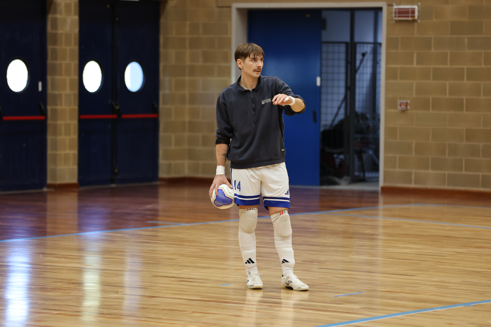

Traguardo prestigioso per i seggiolai che eliminano una squadra di 2 categorie superiori e passano ai 32esimi
Impresa del Manzano che elimina il Pordenone nel secondo turno di Coppa Divisione. Primo tempo di sofferenza con i neroverdi avanti 2-1. Ripresa dove la squadra di Serie A2 Élite spinge ancora tantissimo, ma trova un Manzano più battagliero, deciso non solo a fare bella figura ma a portare a casa il risultato. Il colpaccio si concretizza grazie agli acuti di Dorigo e Iurlaro. Per il resto ci pensano un insuperabile Pozzatello e un’ottima difesa (prova di grande sacrificio di diversi elementi come Stacco, Tancos, Zharri e Dorigo) a scrivere una piccola pagina nella storia della società gialloblù.
PRIMO TEMPO – Squadre rimaneggiate al via, sia Manzano che Pordenone rinunciano a diversi interpreti principali. Primi squilli pordenonesi: Pozzatello sollecitato due volte, alla terza Pretto riesce a superare l’opposizione del portiere ex Palma, non impeccabile. Vantaggio neroverde al 4’.
Il Manzano pareggia subito: Klejdi Zharri raccoglie una respinta dal limite e fulmina Catto con un rasoterra: 1-1.
Seggiolai che cavalcano l’entusiasmo: Stacco cavalca verso la porta e calcia a giro fuori di poco. Risponde il Pordenone con Martinez, ben servito da Pretto, stoppato dal miracolo di Pozzatello che si riprende subito la scena. Sull’altro fronte occasione clamorosa per il Manzano: Avitabile va via sulla fascia e la mette in mezzo per Lorenzo De Giorgio, il pivot ci arriva con la punta del piede e spara alto a porta semivuota.
Gol sbagliato, gol subito: il Pordenone riparte, Jodas serve in diagonale Corona che indovina l’angolino alto con una botta: 2-1 ospite.
Manzano in palla che inizia a subire. Ci pensa Pozzatello, capitano di giornata, a tenere a galla i suoi. Gaiarin ha tre occasioni, Pozzatello è superlativo su due, mentre sulla terza il giovane pivot spara sull’esterno della rete.
Molto pericolosi anche Pretto, Martinez e Corona. I neroverdi vanno a caccia del tris, molto importanti due deviazioni difensive di Genna e Tancos. In avanti i padroni di casa si affidano al lancio lungo. Su uno di questi è provvidenziale Pretto in spaccata che sporca una buona palla diretta a Lorenzo De Giorgio, che poi complica la vita a Catto con un pressing sulla linea.
Ultime occasioni del primo tempo sempre di marca pordenonese: Pretto e Gaiarain colpiscono 2 pali su corner.
SECONDO TEMPO – Manzano che torna in campo con una luce diverse. La squadra di Movio e Sironi deve sempre contenere il grande ritmo ospite ma gioca con maggiore cattiveria e applicazione. Pretto ha subito un’occasione, ma al 2’ il Manzano pareggia. Avitabile pressa forte Jodas che per tenere la palla in campo la butta in mezzo nella sua area, un errore letale perché Dorigo è ben appostato, intercetta e trova il primo gol con la maglia del Manzano: 2-2.
Il centrale spagnolo del Pordenone prova a riscattarsi con un grande assist per Martinez, ma Pozzatello è miracoloso.
Al 10’ i seggiolai guadagnano una punizione di seconda dal limite. Tancos la tocca per Iurlaro che sfonda la porta: 3-2 Manzano. Valentinuzzi prova subito a bissare, salta secco Martinez prima di venire chiuso da Catto in uscita.
Conto delle occasioni che poi pende dalla parte del Pordenone, con i padroni di casa ben accorti in difesa. Pozzatello sempre sugli scudi; gli ospiti recriminano anche per i legni: Jodas colpisce un palo interno, si mangia le mani anche Pretto che dal limite coglie un doppio palo e poi manda a lato di pochissimo con un tocco morbido.
Il Manzano mette la testa fuori con Dorigo che riparte dopo un salvataggio sulla linea di Genna e spreca sul fondo a tu per tu con Catto.
Pozzatello ancora decisivo parando a mano aperta l’ennesimo tentativo di Pretto. Ci prova anche Catto, salito a centrocampo, con un rasoterra diretto in area, salvifica la deviazione di Dorigo.
Nel finale mister Bertoli schiera il portiere di movimento, la situazione manzanese si complica ulteriormente quando a 30 secondi dalla fine Iurlaro viene espulso per doppia ammonizione. Il fortino gialloblù regge con 3 uomini contro 5. Ultimissima chance per il pareggio quando il Pordenone calcia più volte in area trovando le respinte di un eroico Pozzatello e un ennesimo legno. Niente da fare, passa il Manzano per 3-2.
Dopo le Eagles, il Manzano elimina anche il Pordenone e accede ai 32esimi di finale di Coppa della Divisione. Prossimo turno a novembre inoltrato. Nel mezzo si torna con al campionato. Sabato trasferta in casa del CUS Trento.